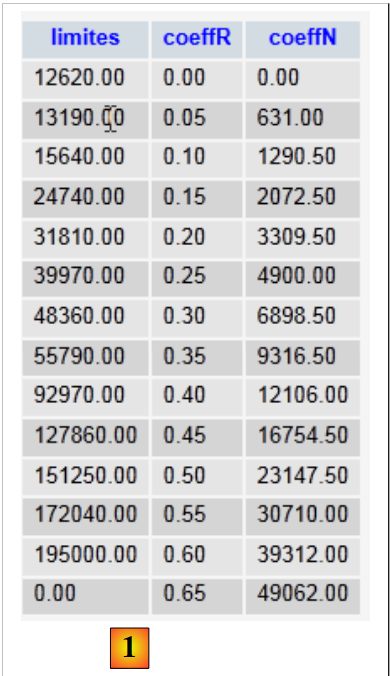

11. Exercise IMPOTS with a WEB service and a three-tier architecture
We will revisit exercise IMPOTS (see sections 4.2, 4.3, 6) and turn it into a client/server application. The server script will be broken down into three components:
- a layer named [dao] (Data Access Objects) that will handle communication with the database MySQL
- a layer named [métier] that will calculate the tax
- a layer named [web] that will handle communication with the clients web service.
 |
The client script [1]:
- sends the three pieces of information ($marié, $enfants, $salaire) required to calculate the tax to the server script
- displays the server’s response on the console
The server script [2] consists of the server layer [web].
- At the start of a new client session, it will place the data from the MySQL and [dbimpots] databases into arrays. To do this, it will call upon the [dao] layer. The arrays thus constructed will be placed in the client session so that they can be used in subsequent client requests.
- During a client request, it will pass the three pieces of information ($marié, $enfants, $salaire) to the [métier] layer, which will calculate the tax $impot.
- The server script will return the calculated tax $impôt.
11.1. The client script (clients_impots_05_web)
The client script will be a client of the tax calculation web service. It will post (POST) parameters to the server in the following format:
params=$married,$children,$salary where
- $marié is the string "yes" or "no",
- $enfants will be the number of children,
- $salaire is the taxpayer's salary
It finds the three preceding parameters in a text file named [data.txt] in the format (married, children, salary):
The client script
- will read the text file [data.txt] line by line
- send the string `params=$marié,$enfants,$salaire` to the tax calculation web service
- retrieve the response from the service. This response can take two forms:
- will save the server's response to a text file named [resultats.txt] in one of the following two formats:
The client-side script code is as follows:
<?php
// tax client
// error management
ini_set("display_errors", "off");
// ---------------------------------------------------------------------------------
// a class of utility functions
class Utilitaires {
function cutNewLinechar($ligne) {
...
}
}
// main -----------------------------------------------------
// definition of constants
$DATA = "data.txt";
$RESULTATS = "resultats.txt";
// server data
$HOTE = "localhost";
$PORT = 80;
$urlServeur = "/exemples-web/impots_05_web.php";
// taxable person parameters (marital status, number of children, annual salary)
// were placed in the $DATA text file, one line for each taxpayer
// results (marital status, number of children, annual salary, tax payable)
// or (marital status, number of children, annual salary, error msg) are placed in
// the $RESULTATS text file, with one result per line
// utility class
$u = new Utilitaires();
// opening taxpayer data files
$data = fopen($DATA, "r");
if (!$data) {
print "Impossible d'ouvrir en lecture le fichier des données [$DATA]\n";
exit;
}
// open results file
$résultats = fopen($RESULTATS, "w");
if (!$résultats) {
print "Impossible de créer le fichier des résultats [$RESULTATS]\n";
exit;
}
// the current line of the taxpayer data file is used
while ($ligne = fgets($data, 100)) {
// remove any end-of-line marker
$ligne = $u->cutNewLineChar($ligne);
// we retrieve the 3 fields married:children:salary which form $ligne
list($marié, $enfants, $salaire) = explode(",", $ligne);
// tax calculation
list($erreur, $impôt) = calculerImpot($HOTE, $PORT, $urlServeur, $cookie, array($marié, $enfants, $salaire));
// enter the result
$résultat = $erreur ? "$marié:$enfants:$salaire:$erreur" : "$marié:$enfants:$salaire:$impôt";
fputs($résultats, "$résultat\n");
// following data
}
// close files
fclose($data);
fclose($résultats);
// end
print "Terminé...\n";
exit;
function calculerImpot($HOTE, $PORT, $urlServeur, &$cookie, $params) {
// connects client to ($HOTE,$PORT,$urlServeur)
// sends the $cookie cookie if it is non-empty. $cookie is passed by reference
// sends $params to the server
// exploits the single line returned by the server
// open a connection on port 80 of $HOTE
$connexion = fsockopen($HOTE, $PORT);
// mistake?
if (!$connexion)
return array("erreur lors de la connexion au serveur ($HOTE, $PORT)");
// protocol HTTP headers must end with an empty line
// POST
fputs($connexion, "POST $urlServeur HTTP/1.1\n");
// Host
fputs($connexion, "Host: localhost\n");
// Connection
fputs($connexion, "Connection: close\n");
// send cookie if non-empty
if ($cookie) {
fputs($connexion, "Cookie: $cookie\n");
}//if
// now we send the client instruction after encoding it
$infos = "params=" . urlencode(implode(",", $params));
// indicate the type of information to be sent
fputs($connexion, "Content-type: application/x-www-form-urlencoded\n");
// send the size (number of characters) of the information to be sent
fputs($connexion, "Content-length: " . strlen($infos) . "\n");
// send an empty line
fputs($connexion, "\n");
// we send the news
fputs($connexion, $infos);
// the web server response is displayed
// and we take care to recover any cookie
while ($ligne = fgets($connexion, 1000)) {
// cookie - only on 1st response
if (!$cookie) {
if (preg_match("/^Set-Cookie: (.*?)\s*$/", $ligne, $champs)) {
$cookie = $champs[1];
}//if
}
// as soon as there is an empty line, the HTTP response is terminated
if (trim($ligne) == "") {
break;
}
}//while
// read line result
$ligne = fgets($connexion, 1000);
// close the connection
fclose($connexion);
// result calculation
$erreur="";
$impôt="";
if (preg_match("/^<erreur>(.*?)<\/erreur>\s*$/", $ligne, $champs)) {
$erreur = $champs[1];
} else {
if (preg_match("/^<impot>(.*?)<\/impot>\s*$/", $ligne, $champs)) {
$impôt = $champs[1];
}else{
$erreur="résultat du serveur non exploitable";
}
}
// return
return array($erreur, $impôt);
}
Comments
The client-side script code includes elements we've seen before:
- lines 9–15: the [Utilitaires] class was introduced in version 3, paragraph 6
- lines 17–68: the main program is similar to that in version 1, section 4.2. It differs only in the tax calculation, line 56.
- line 56: the tax calculation function accepts the following parameters:
- $HOTE, $PORT, $urlServeur: used to connect to the web service
- $cookie: is the session cookie. This parameter is passed by reference. Its value is set by the tax calculation function. On the first call, it has no value. Subsequently, it has one.
- array($marié, $enfants, $salaire): represents a line in the [data.txt] file
The tax calculation function returns an array of two results ($erreur, $impôt), where $erreur is a possible error message and $impôt is the tax amount.
- Lines 70–134: This is a classic Http client, as we have encountered many times before. Note the following points:
- Line 83: The parameters ($marié, $enfants, $salaire) are sent to the server via a POST
- lines 89–91: if the client has a session ID, it sends it to the server
- line 93: creation of the params parameter
- line 101: sending the params parameter
- lines 104–115: the client reads all Http headers sent by the server until it encounters the empty line marking the end of the headers. It uses this opportunity to retrieve the session ID from the response to its first request.
- lines 123–125: process any line in the form <error>message</error>
- lines 126–128: we do the same with any line of the form <tax>amount</tax>
- line 133: the result is returned
11.2. The tax calculation web service
Here we are interested in the three scripts that make up the server:
 |
The corresponding Netbeans project is as follows:
 |
In [1], the server consists of the following PHP scripts:
- [impots_05_entites] contains the classes used by the server
- [impots_05_dao] contains the classes and interfaces of the [dao] layer
- [impots_05_metier] contains the classes and interfaces of the [metier] layer
- [impots_05_web] contains the classes and interfaces of the layer [dao]
We begin by presenting two classes used by the various layers of the web service.
11.2.1. Web service entities (impots_05_entites)
The database MySQL [dbimpots] has a table [impots] that contains the data necessary for calculating the tax [1]:
 |
We will store the data from the tables MySQL and [impots] in an array of Tranche objects, where Tranche is the following class:
<?php
// a tax bracket
class Tranche {
// private fields
private $limite;
private $coeffR;
private $coeffN;
// getters and setters
public function getLimite() {
return $this->limite;
}
public function setLimite($limite) {
$this->limite = $limite;
}
public function getCoeffR() {
return $this->coeffR;
}
public function setCoeffR($coeffR) {
$this->coeffR = $coeffR;
}
public function getCoeffN() {
return $this->coeffN;
}
public function setCoeffN($coeffN) {
$this->coeffN = $coeffN;
}
// manufacturer
public function __construct($limite, $coeffR, $coeffN) {
$this->setLimite($limite);
$this->setCoeffR($coeffR);
$this->setCoeffN($coeffN);
}
// toString
public function __toString(){
return "[$this->limite,$this->coeffR,$this->coeffN]";
}
}
The private fields [$limite, $coeffR, $coeffN] will be used to store the columns [limites, coeffR, coeffN] of a row in the table MySQL [impots].
In addition, the server code will use a custom exception, the ImpotsException class:
- line 1: the class [ImpotsException] derives from the class [Exception], which is predefined in PHP 5
- line 3: the constructor of the [ImpotsException] class accepts two parameters:
- $message: an error message
- $code: an error code
11.2.2. The [dao] layer (impots_05_dao)
The [dao] layer provides access to database data:
 |
The [dao] layer has the following interface:
The IImpotsDao interface exposes only the getData function. This function places the various rows of the MySQL and [dbimpots.impots] tables into an array of Tranche objects.
The implementation class is as follows:
<?php
// layer Dao
// dependencies
require_once "impots_05_entites.php";
// constants
define("TABLE", "impots");
// -----------------------------------------------------------------
// abstract implementation
abstract class ImpotsDaoWithPdo implements IImpotsDao {
// private fields
private $dsn;
private $user;
private $passwd;
private $tranches;
// getters and setters
public function getDsn() {
return $this->dsn;
}
public function setDsn($dsn) {
$this->dsn = $dsn;
}
public function getUser() {
return $this->user;
}
public function setUser($user) {
$this->user = $user;
}
public function getPasswd() {
return $this->passwd;
}
public function setPasswd($passwd) {
$this->passwd = $passwd;
}
// manufacturer
public function __construct($dsn, $user, $passwd) {
// save parameters
$this->setDsn($dsn);
$this->setUser($user);
$this->setPasswd($passwd);
// retrieve data from SGBD
// connects ($user,$pwd) to base $dsn
try {
// connection
$connexion = new PDO($dsn, $user, $passwd, array(PDO::ATTR_PERSISTENT => true));
// read table $TABLE
$requête = "select limites,coeffR,coeffN from " . TABLE;
// executes the $requête request on the $connexion connection
$statement = $connexion->prepare($requête);
$statement->execute();
// query result evaluation
while ($colonnes = $statement->fetch()) {
$this->tranches[] = new Tranche($colonnes[0], $colonnes[1], $colonnes[2]);
}
// disconnect
$connexion=NULL;
} catch (PDOException $e) {
// return with error
throw new ImpotsException($e->getMessage(), 1);
}
}
public function getData(){
return $this->tranches;
}
}
- Line 5: The implementation of the [IImpotsDao] interface requires the classes defined in the [impots_05_entites] script.
- line 11: definition of an abstract class. An abstract class is a class that cannot be instantiated. An abstract class must be derived from another class in order to be instantiated. A class can be declared abstract because it cannot be instantiated (some of its methods are not defined) or because we do not want to instantiate it. Here, we do not want to instantiate the class [ImpotsDaoWithPdo]. We will instantiate derived classes.
- Line 11: The class [ImpotsDaoWithPdo] implements the interface [IImpotsDao]. It must therefore define the method getData. This method is found on lines 72–74.
- Line 14: $dsn (Data Source Name) is a character string that uniquely identifies the SGBD and the database used.
- Line 15: $user identifies the user logging into the database
- line 16: $passwd is the password for the previous user
- Line 17: $tranches is the Tranche object array in which the table MySQL [dbimpots.impots] will be stored.
- Lines 45–70: The class constructor. This code was previously encountered in version 4, Section 8.2. Note that the construction of the [ImpotsDaoWithPdo] object may fail. An exception of type [ImpotsException] is then thrown.
- Lines 72–74: the [getData] method of the [IImpotsDao] interface.
The [ImpotsDaoWithPdo] class is suitable for any SGBD. The class constructor, line 45, requires knowledge of the Data Source Name from the database. This string depends on the SGBD used. We have chosen not to require the class user to know this Data Source Name. For each SGBD, there will be a specific class derived from [ImpotsDaoWithPdo]. For the SGBD MySQL, this will be the following class:
class ImpotsDaoWithMySQL extends ImpotsDaoWithPdo {
public function __construct($host, $port, $base, $user, $passwd) {
parent::__construct("mysql:host=$host;dbname=$base;port=$port", $user, $passwd);
}
}
- line 3, the constructor does not request the Data Source Name, but simply the hostname of the SGBD ($host), its listening port ($port), and the database name ($base).
- Line 4: The Data source Name from the MySQL database is constructed and used to call the parent class constructor.
Note that to adapt to another SGBD, simply write the appropriate class derived from [ImpotsDaoWithPdo]. In each case, this involves constructing the Data Source Name specific to the SGBD being used.
11.2.3. The [métier] (impots_05_metier) layer
The [metier] layer contains the tax calculation logic:
 |
The [métier] layer has the following interface:
<?php
// business interface
interface IImpotsMetier {
public function calculerImpot($marié, $enfants, $salaire);
}
The [IImpotsMetier] interface exposes only one method, the [calculerImpot] method, which calculates a taxpayer's tax based on the following parameters:
- $marié: a string indicating whether the taxpayer is married or not
- $enfants: the number of the taxpayer’s children
- $salaire: the taxpayer’s salary
The [web] layer will provide these parameters.
The implementation of the [IImpotsMetier] interface is as follows:
// dependencies
require_once "impots_05_dao.php";
// ------------------------------------------------------------------
// implementation class
class ImpotsMetier implements IImpotsMetier {
// layer dao
private $dao;
// object array [Slice]
private $data;
// getter and setter
public function getDao() {
return $this->dao;
}
public function setDao($dao) {
$this->dao = $dao;
}
public function setData($data){
$this->data=$data;
}
public function __construct($dao) {
// retrieve the data needed to calculate taxes
$this->setDao($dao);
$this->setData($this->dao->getData());
}
public function calculerImpot($marié, $enfants, $salaire) {
// $marié : yes, no
// $enfants : number of children
// $salaire: annual salary
// number of shares
$marié = strtolower($marié);
if ($marié == "oui")
$nbParts = $enfants / 2 + 2;
else
$nbParts=$enfants / 2 + 1;
// an additional 1/2 share if at least 3 children
if ($enfants >= 3)
$nbParts+=0.5;
// taxable income
$revenuImposable = 0.72 * $salaire;
// family quotient
$quotient = $revenuImposable / $nbParts;
// is set at the end of the limit table to stop the following loop
$N = count($this->data);
$this->data[$N - 1]->setLimite($quotient);
// tAX CALCULATION
$i = 0;
while ($i < $N and $quotient > $this->data[$i]->getLimite()) {
$i++;
}
// because $quotient has been placed at the end of the $limites array, the previous loop
// cannot exceed the table $limites
// now we can calculate the tax
return floor($revenuImposable * $this->data[$i]->getCoeffR() - $nbParts * $this->data[$i]->getCoeffN());
}
}
- line 2: the [métier] layer requires the classes from the [dao] layer and the entities (Tranche, ImpotsException).
- line 6: the class [ImpotsMetier] implements the interface [IimpotsMetier].
- Lines 9–11: The private fields of the class:
- $dao: reference to layer [dao]
- $data: array of objects of type [Tranche] provided by layer [dao]
- lines 26–30: the class constructor initializes the two preceding fields. It receives a reference to the [dao] layer as a parameter.
- lines 32–61: implementation of the [calculerImpot] method of the [IimpotsMetier] interface. This method was first encountered in version 1 (Section 4.2).
11.2.4. The [web] layer (impots_05_web)
The [metier] layer contains the tax calculation logic:
 |
The [web] layer consists of the web service that responds to the clients web requests. Recall that these requests are made to the web service by posting the following parameter: params=married,children,salary. This is a web service similar to those we built in the previous sections. Its code is as follows:
<?php
// business layer
require_once "impots_05_metier.php";
// error management
ini_set("display_errors", "off");
// uTF-8 header
header("Content-Type: text/plain; charset=utf-8");
// ------------------------------------------------------------------------------
// tax web service
// definition of constants
$HOTE = "localhost";
$PORT = 3306;
$BASE = "dbimpots";
$USER = "root";
$PWD = "";
// the data required to calculate the tax has been placed in table mysql IMPOTS
// belonging to the $BASE database. The table has the following structure
// limits decimal(10,2), coeffR decimal(6,2), coeffN decimal(10,2)
// taxable person parameters (marital status, number of children, annual salary)
// are sent by the customer in the form params=marital status, number of children, annual salary
// results (marital status, number of children, annual salary, tax payable) are returned to the customer
// in the form <impot>impot</impot>
// or in the form <error>error</error>, if the parameters are invalid
// retrieve the [business] layer in the session
session_start();
if (!isset($_SESSION['metier'])) {
// instantiation of layer [dao] and layer [métier]
try {
$_SESSION['metier'] = new ImpotsMetier(new ImpotsDaoWithMySQL($HOTE, $PORT, $BASE, $USER, $PWD));
} catch (ImpotsException $ie) {
print "<erreur>Erreur : " . utf8_encode($ie->getMessage() . "</erreur>");
exit;
}
}
$metier = $_SESSION['metier'];
// retrieve the line sent by the client
$params = utf8_encode(htmlspecialchars(strtolower(trim($_POST['params']))));
$items = explode(",", $params);
// there must be only 3 parameters
if (count($items) != 3) {
print "<erreur>[$params] : nombre de paramètres invalides</erreur>\n";
exit;
}//if
// first parameter (marital status) must be yes/no
$marié = trim($items[0]);
if ($marié != "oui" and $marié != "non") {
print "<erreur>[$params] : 1er paramètre invalide</erreur>\n";
exit;
}//if
// the second parameter (number of children) must be an integer
if (!preg_match("/^\s*(\d+)\s*$/", $items[1], $champs)) {
print "<erreur>[$params] : 2ième paramètre invalide</erreur>\n";
exit;
}//if
$enfants = $champs[1];
// the third parameter (salary) must be an integer
if (!preg_match("/^\s*(\d+)\s*$/", $items[2], $champs)) {
print "<erreur>[$params] : 3ième paramètre invalide</erreur>\n";
exit;
}//if
$salaire = $champs[1];
// tax calculation
$impôt = $metier->calculerImpot($marié, $enfants, $salaire);
// return the result
print "<impot>$impôt</impot>\n";
// end
exit;
- line 4: layer [web] requires the classes from layer [métier]
- lines 30-40: the reference to layer [métier] is added to the session. If we recall that this layer [métier] has a reference to the layer [dao] and that the latter stores the data from SGBD, we can see that:
- that the client’s first request will trigger an access to SGBD
- Subsequent requests from the same client will use the data cached by layer [dao]. Therefore, there is no access to SGBD.
- Line 34: Construction of a [métier] layer working with a [dao] layer implemented for SGBD MySQL
- lines 35-37: handling of a possible error in the previous operation. In this case, a <error>message</error> line is sent to the client.
- line 43: retrieve the 'params' parameter that was posted by the client.
- lines 46-49: we check the number of items found in 'params'
- lines 51-55: we check the validity of the first piece of information
- Lines 56–60: Same for the second piece of information
- lines 62-66: same for the third
- Line 69: The [métier] layer calculates the tax.
- Line 71: Send the result to the client
Results
Recall that client [client_impots_web_05] uses the following file [data.txt]:
Based on these lines (married, children, salary), the client queries the tax calculation server and writes the results to the text file [resultats.txt]. After the client runs, the contents of this file are as follows:
oui:2:200000:22504
non:2:200000:33388
oui:3:200000:16400
non:3:200000:22504
oui:5:50000:0
non:0:3000000:1354938
where each line is in the form (married, children, salary, calculated tax).